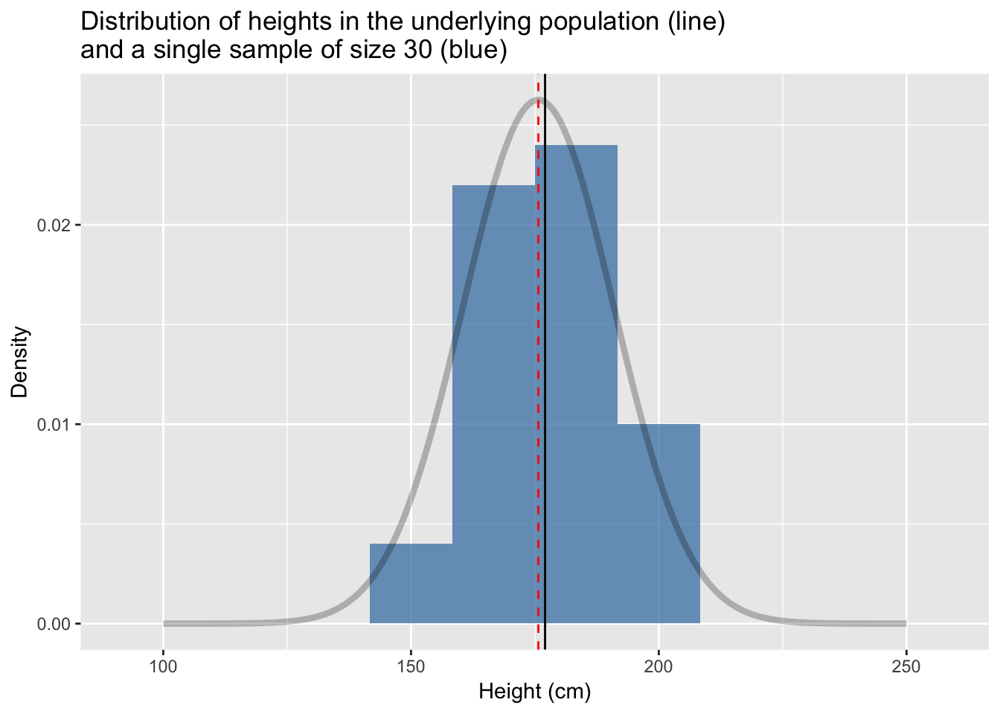
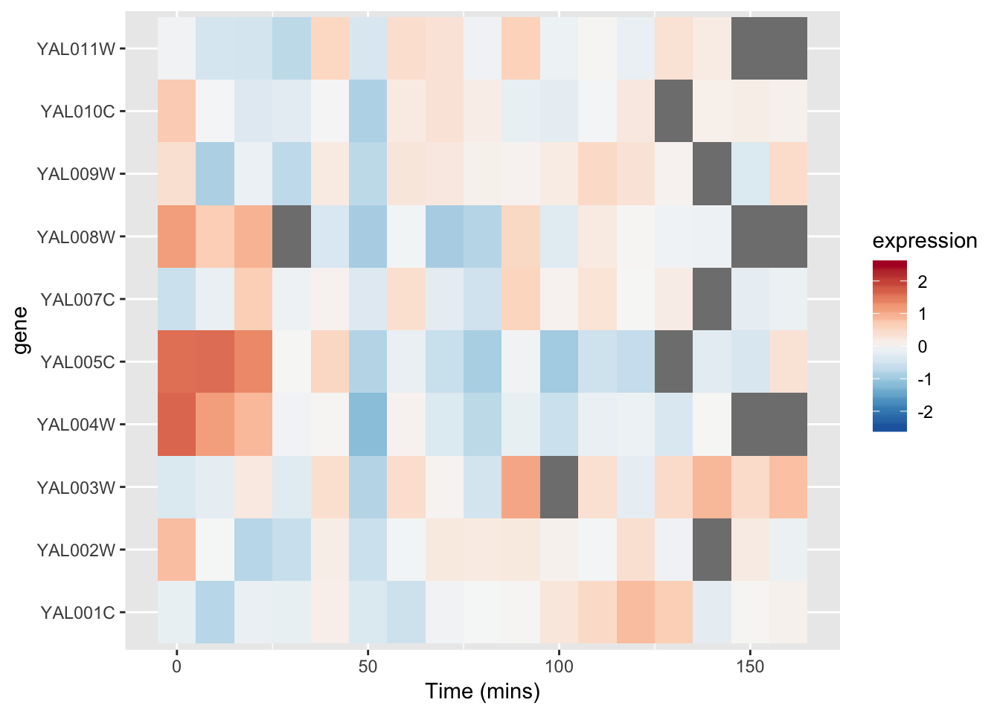

Chapter 17 Simulating confidence intervals
Recall the concept of the sampling distribution of a statistic – this is simply the probability distribution of the statistic of interest you would observe if you took a large number of random samples of a given size from a population of interest and calculated that statistic for each of the samples.
You learned that the standard deviation of the sampling distribution of a statistic has a special name – the standard error of that statistic. The standard error of a statistic provides a way to quantify the uncertainty of a statistic across random samples. Here we show how to use information about the standard error of a statistic to calculate confidence intervals for a statistic based on a set of observed data.
17.1 Confidence Intervals
We know that given a random sample from a population of interest, the value of a statistic of interest is unlikely to be exactly equally to the true population value of that statistic. However, our simulations have taught us a number of things:
As sample size increases, the sample estimate of the given statistic is more likely to be close to the true value of that statistic
As sample size increases, the standard error of the statistic decreases
We can use this knowledge to calculate a plausible ranges of values for the statistic of interest. We call such ranges confidence intervals for the statistic of interest.
17.2 Calibrating confidence intervals
How are we to calibrate “plausible ranges”? We will define an “X% percent confidence interval for a statistic of interest”, as an interval that when calculated from a random sample, would include the true population value of the statistic X% of the time.
This quote from the NIST page on confidence intervals, which I’ve adapted to refer to any statistic, helps to make this concrete regarding confidence intervals:
As a technical note, a 95 % confidence interval does not mean that there is a 95 % probability that the interval contains the true [statistic]. The interval computed from a given sample either contains the true [statistic] or it does not. Instead, the level of confidence is associated with the method of calculating the interval … That is, for a 95% confidence interval, if many samples are collected and the confidence interval computed, in the long run about 95% of these intervals would contain the true [statistic].
17.3 Standard formulation for confidence intervals
We define the \((100\times\beta)\)% confidence interval for the statistic \(\phi\) as the interval:
\[ CI_\beta = \phi_{n} \pm (z \times {SE}_{\phi,n}) \]
Where:
- \(\phi_{n}\) is the statistic of interest in a random sample of size \(n\)
- \({SE}_{\phi,n}\) is the standard error of the statistic \(\phi\) (via simulation or analytical solution)
And the value of \(z\) is chosen so that:
- across many different random samples of size \(n\), the true value of the \(\phi\) in the population of interest would fall within the interval approximately \((100\times\beta)\)% of the time
So rather than estimating a single value of \(\phi\) from our data, we will use our observed data plus knowledge about the sampling distribution of \(\phi\) to estimate a range of plausible values for \(\phi\). The size of this interval will be chosen so that if we considered many possible random samples, the true population value of \(\phi\) would be bracketed by the interval in \((100\times\beta)\)% of the samples.
17.4 Confidence intervals for the mean
17.5 Simulating confidence intervals for the mean
To make the idea of a confidence interval more concrete, let’s carry out a simulation based on confidence intervals for the mean. In our simulation we will explore how varying the value of \(z\) changes the percentage of times that the confidence interval brackets the true population mean.
17.6 Sample estimate of the standard error of the mean
Recall that if a variable \(X\)is normally distributed in a population of interest, \(X \sim N(\mu, \sigma)\), then the sampling distribution of the mean is also normally distributed with mean \(\sim μ\), and standard error \({SE}_\overline{X} = \frac{\sigma}{\sqrt{n}}\):
\[ \overline{X} \sim N \left( \mu, \frac{\sigma}{\sqrt{n}}\ \right) \]
The above formula requires us to know the true population standard deviation, \(\sigma\) in order to calculate \({SE}_\overline{X}\). In the absence of this information, the best we can do is use our “best guess” for \(\sigma\) – the sample standard deviation \(s_X\) that we calculate from the sample in hand. That is, we estimate the standard error of the mean as: \[ {SE}_{\overline{X}} = \frac{s_X}{\sqrt{n}} \]
We learned last time that when we estimate the standard error of the mean from the standard deviation of sample, these estimated standard error are better described by the \(t\)-distribution when samples are small. As sample sizes increase, the standard normal distribution and the \(t\)-distribution converge.
17.7 Libraries
17.8 CI of mean simulation
In our simulation we’re going to generate a large number of samples, and for each sample we will calculate the sample estimate of the standard error of the mean, and the CI of the mean for a range of multiples of the estimated standard error mean. We will then ask, “for what fraction of the samples did our CI overlap the true population mean”? This will give us a sense of how well different confidence intervals, expressed in terms of multiples \(z\) of the sample standard errors, do in terms providing a plausible range for the mean.
For this example we’re going to reuse our simulated height data from last class:
set.seed(20180328)
# male mean height and sd in centimeters from USDHHS report
mean.ht <- 175.7
sd.ht <- 15.19
height.data <- data_frame(height = rnorm(25000, mean = mean.ht, sd = sd.ht))
true.values <-
height.data %>%
summarize(mean = mean(height),
sd = sd(height))Let’s also setup a utitity function to generate random samples and calculate stats of interest:
rsample.stats <- function(x, n, var.name) {
sample_x <- sample_n(x, n)
data_frame(sample.size = n,
sample.mean = mean(sample_x[[var.name]]),
sample.sd = sd(sample_x[[var.name]]),
sample.se = sample.sd/sqrt(n))
}Now we’ll generate 1000 random samples of size 50.
Using those 1000 random sample, we consider different values of \(z\) to calculate confidence intervals. For each value of \(z\) we determine what percent of the confidence intervals included the true mean.
z.values <- seq(1, 3, 0.05)
perc.in.CI <- c()
for (z in z.values) {
CI.left <- samples.of.50$sample.mean - z * samples.of.50$sample.se
CI.right <- samples.of.50$sample.mean + z * samples.of.50$sample.se
mean.in.CI <- (CI.left <= true.values$mean) & (CI.right >= true.values$mean)
perc.in.CI <- c(perc.in.CI, 100 * sum(mean.in.CI)/length(mean.in.CI))
}
CI.df <- data_frame(z = z.values, perc.brackets.mean = perc.in.CI)
CI.dfWe then plot our results. Since the sampling distribution of the mean is approximately normally distributed, we can also use the distribution function of a normal distribution to calculate the proportion of samples that would include the true mean as we change the size of our confidence intervals (by changing \(z\)). This theoretical expectation is shown as the red dashed line in the figure below.
# theoretical expectation from the fact that sampling distribution of mean has a t-distribution
theory.frac.overlap <- 1 - 2*(1 - pt(z.values, df = 49))
ggplot(CI.df, aes(x = z, y = perc.brackets.mean)) +
geom_line(aes(x = z.values, y = theory.frac.overlap * 100), color="red", linetype = 'dashed') +
geom_line() +
labs(x = "z in CI = sample mean ± z × SE",
y = "% of CIs that include \ntrue population mean")
How should we interpret the results above? We found as we increased the scaling of our confidence intervals (larger \(z\)), the true mean was within sample confidence intervals a greater proportion of the time. For example, when \(z = 1\) we found that the true mean was within our CIs roughly 70% of the time, while at \(z = 2\) the true mean was within our confidence intervals approximately 95% of the time.
17.9 Generating a table of CIs and corresponding margins of error
The table below gives the percent CI and the corresponding margin of error (the appropriate \(z\) to use in \(z \times {SE}\)) for that confidence interval based on the assumption that the sampling distribution of the mean has a t-distribution with \(df=49\) (\(df\) = sample size - 1).
percent <- c(0.80, 0.90, 0.95, 0.99, 0.997)
zval <- -qt((1 - percent)/2, df = 49) # account for two tails of the sampling distn
z.df <- data.frame(ci.percent = percent, margin.of.error = zval)
z.dfUsing this table we can lookup the appropriate margin of error (\(z\)) to use to get correspnoding confidence intervals.
For example:
To calculate the for the 95% CIs of the mean, we look up the corresponding row of the table which tells us the appropriate confidence interval is given by: \(\overline{X} \pm 2.00 \times {SE}_\overline{X}\)
For 99% CIs of the mean: \(\overline{X} \pm 2.68 \times {SE}_\overline{X}\)
17.10 Interpreting our simulation
Let’s review exactly what we mean by a “95% confidence interval”. This means if we took many samples and built a confidence interval for each sample using the equation above, then about 95% of those intervals would contain the true mean, μ. Note that this is exactly what we did in our simulation!
samples.of.50 %<>%
mutate(ci.95.left = (sample.mean - 2.00 * sample.se),
ci.95.right = (sample.mean + 2.00 * sample.se),
ci.includes.mean = (ci.95.left <= true.values$mean) & (ci.95.right >= true.values$mean))
n.draw <- 100
samples.of.50 %>%
sample_n(n.draw) %>%
ggplot(aes(x = sample.mean, y = seq(1, n.draw), color = ci.includes.mean)) +
geom_vline(xintercept = true.values$mean, color = "gray", alpha=0.75, linetype = "dashed", size = 1) +
geom_point() +
geom_errorbarh(aes(xmin = ci.95.left, xmax = ci.95.right)) +
scale_color_manual(values=c("red", "black")) +
labs(x = "mean x and estimated CI", y = "sample",
title = "95% CI: mean ± 2.00×SE\nfor 100 samples of size 50") 